Melke – компания нового поколения. Основываясь на существующем европейском опыте по производству ПВХ-окон, на экспертных рекомендациях, экологических требованиях и тенденциях современной промышленности, компания Melke смогла совершить переворот в производственном процессе пластиковых окон.
Наша миссия – сделать идеальный при этом доступный всем продукт, превосходящий по качеству все существующие на рынке.
В современном мире все больше людей начинают задумываться о влиянии своего выбора на окружающую среду. Именно поэтому мы производим наш продукт с особой заботой об экологии. Каждый элемент нашего изделия проходит строгий контроль качества, чтобы обеспечить его долговечность и надежность на долгие годы. Мы убеждены, что высококачественный продукт не только приносит радость своим владельцам, но и помогает сохранить нашу планету для будущих поколений.

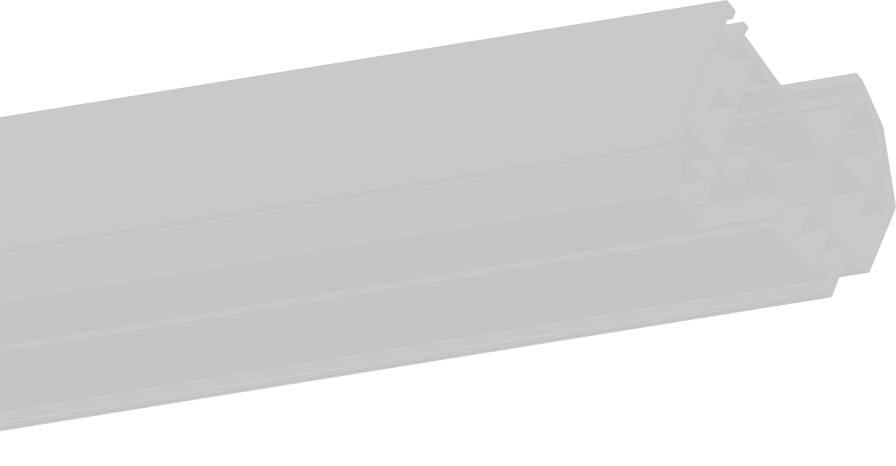

 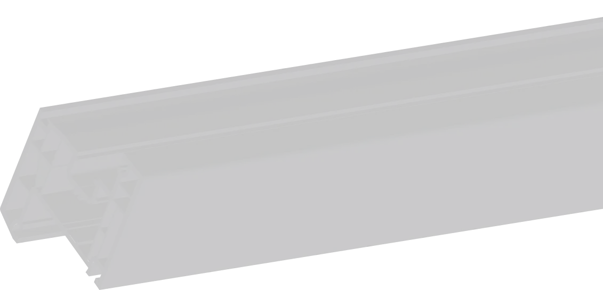
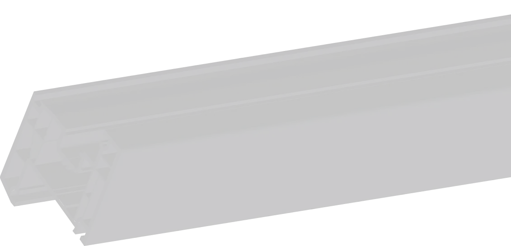
Используем современные технологии
Melke, применяя технологию коэкструзии, задает тренд на ультрасовременные решения в области производства оконного профиля в России. Кроме того, мы единственные в стране наладили процесс переработки пластика и гордимся, что сделали это еще раньше появления законодательных актов, обязывающих применять рециклинг. Melke предвосхищает ожидания, оказываясь на шаг впереди и позволяя покупателям получить высококачественную, продукцию по приемлемой цене.
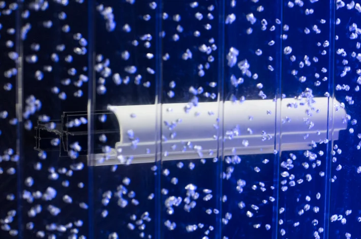
Поддерживаем осознанность
Жизнь в хрупком, тревожном, нелинейном, непостижимом BANI-мире буквально заставила нас снять розовые очки. Мы больше не надеемся, что кто-то другой решит глобальные проблемы, что что-то само по себе образуется. В ответ на внешнюю неустойчивость сегодня, как никогда, важно сформировать устойчивость внутреннюю. И взять на себя ответственность за то, на что ты точно можешь повлиять. Например, выбирая устойчивые продукты, тем самым, снижая ущерб для природы. Melke ставит перед собой цель доказать, что пластик, созданный по современным технологиям с включением переработанных материалов, тоже может быть таким продуктом, с помощью которого вам по силам начать изменения мира хотя бы вокруг себя.

Пространства для готовых меняться и менять
Melke поможет забыть о любых вопросах, связанных с эксплуатацией окон; освободить ваше время для того, чтобы наслаждаться многогранной, интересной, творческой жизнью, не отвлекаясь на бытовые проблемы; почувствовать в себе силу созидания, готовность воплощать мечты и благодаря этому ощутить гармонию.
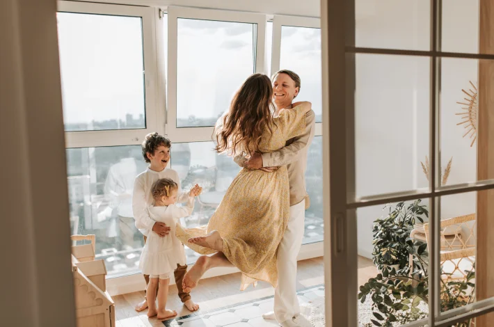
Приближая будущее
Бренд Melke родился как ответ на устоявшиеся традиции производства окон в России. Мы почувствовали, что пора что-то менять и перевернуть представления о современном ПВХ-профиле, показать, каким он действительно должен быть. Так компания с самых первых шагов встала на путь инноваций. И придерживается этого изначально установленного маршрута. Но мы не верим в инновации ради инноваций. Поэтому каждая наша идея рождается для того, чтобы сделать жизнь людей комфортнее, практичнее, экологичнее – приблизить лучшее будущее.
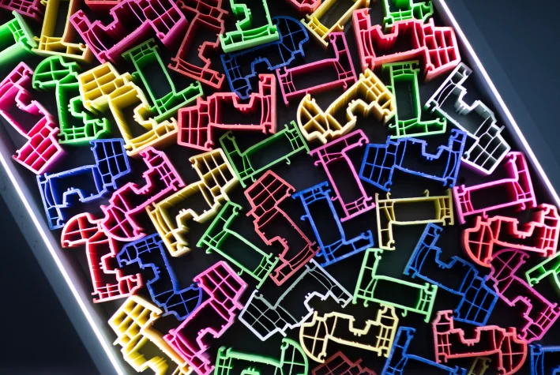
С заботой о важном
В последнее время мы чаще стали задумываться о том, что действительно важно. Так, многие, ранее не интересовавшиеся экологией, осознали, как близко мы подошли к точке невозврата: мусорные полигоны переполнены, моря и океаны кишат пластиком – теперь его можно обнаружить даже в нас самих. Но у части общества все еще бытует убеждение, что это слишком масштабные проблемы, чтобы действия одного человека могли на них как-то повлиять. Бренд Melke готов бороться с таким заблуждением, предлагая без больших затрат и усилий встать на путь эко-осознанности. Выбирая нашу продукцию, каждый потребитель может быть уверен, что внес свой значимый вклад в сохранение окружающей среды.
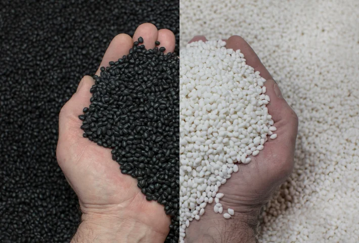
Вдохновляя на перемены
Часто незначительные проблемы настолько погружают в рутину, что мы не замечаем, как потратили себя на неважное, а энергия для того, чтобы радоваться жизни, закончилась. Melke не избавит вас от всех неприятностей, хотя мы бы этого очень хотели. Что мы точно можем сделать – так это взять на себя решение проблем с окнами. Часто их замена становится толчком к изменениям в комнате или даже доме. Окна Melke вдохновляют на трансформацию изнутри! Почувствуйте свободу в уютном и гармоничном пространстве, созданном для того, чтобы тратить время на любимых себя, родных, друзей – на то, что по-настоящему важно. Почувствуйте себя счастливыми.
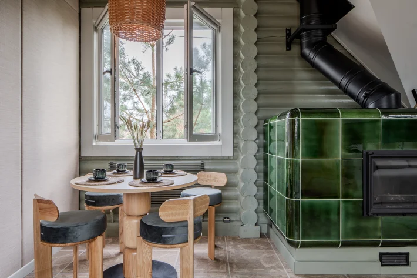
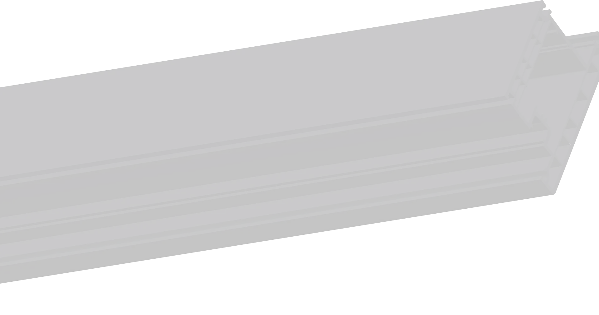
Уникальные преимущества окон Melke
Жёсткость Co-Ex
Профиль Melke единственный в России, который производится по инновационной технологии CO-EX. Это способ производить профиль двухслойным методом, где внешний слой – это чистый ПВХ из компаунда высшего класса по уникальной формуле, и внутренний слой- из вторично переработанного ПВХ-сырья, который и делает оконный профиль значительно жёстче и прочнее, тем самым обеспечивая долговечность готового окна.

Широкая линейка оконных систем
Производитель Melke изготавливает 6 видов профильных систем:
- Lite 60 и Lite 70 — решения с монтажной глубиной 60 и 70 см соответственно. Доступны по цене и подходят для остекления балконов, лоджий, квартир в домах любого типа, коттеджах для сезонного проживания;
- Smart — универсальная система с монтажной глубиной 60 см, позволяющая недорого заказывать остекление большой площади. Четыре воздушные камеры профиля эффективно сохраняют тепло;
- Evolution — самое востребованное решение из каталога с пятью воздушными камерами. Оптимальное соотношение технических характеристик и цены;
- Wide — главная новинка 2024 года. Декоративный профиль премиум-класса подходит для квартир и домов, великолепно вписывается в оформление деревянного загородного коттеджа;
- Centum — уникальный 7-камерный профиль, идеальный для коттеджей. Наилучшая тепло- и шумоизоляция, высокая прочность благодаря усиленному стальному армированию.
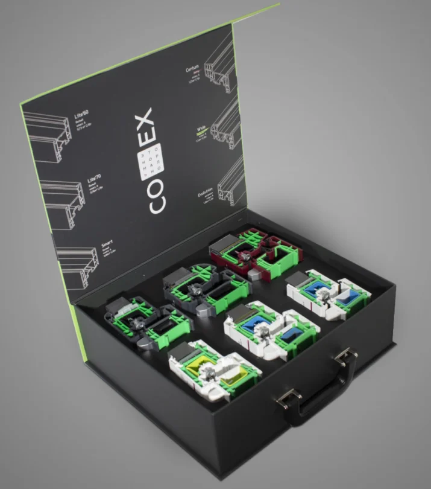
Эластичные уплотнители
Уплотнители Melke Elastic 2.0 – надежные и простые в уходе. Улучшенная формула, отсутствие угловых переломов, прочность и эластичность при температуре от -60℃ до +100℃. Уплотнители практически не впитывают грязь и требуют минимального ухода.
Доступные цвета:

Окна класса «А»
Профиль Melke - инновационный продукт с наилучшими характеристиками по теплоизоляции. Все профильные системы Melke по этому показателю соответствуют высшему классу «А» по водо- и воздухопроницаемости. Количество камер – от 3 до 7, толщина внешних стенок – от 2,7 мм до 3 мм. Каждая система прошла испытания.
И подтвердила свою классификацию.
Скачать сертификаты

Ультраглянцевая поверхность
Уникальный состав внешнего слоя ПВХ в окнах Melke делает окна не просто белоснежными, но и ультраглянцевыми.
Показатели по этим параметрам гораздо выше других производителей. Это не только красиво, но и практично.
Грязь практически не впитывается в белоснежную массу профиля, а ухаживать за ним легко и просто.

Дизайн
Дизайн профильных систем Melke — это настоящий прорыв в области производства оконных конструкций. Благодаря широкому ассортименту продукции, включающему в себя разнообразные декоративные элементы, каждый клиент может подобрать идеальное решение для своего бизнеса. Продукция Melke отличается высоким качеством, долговечностью и стильным дизайном, который подойдёт под любой интерьер. Если вы ищете надёжного партнёра для создания красивых и функциональных оконных конструкций, то выбор в пользу Melke будет правильным решением!
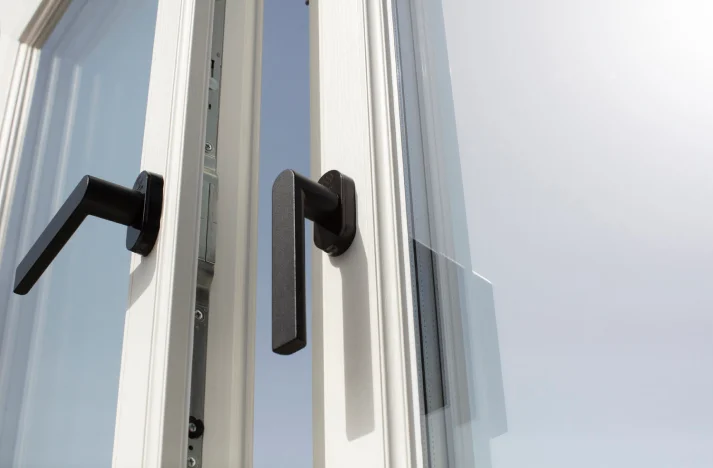
Профиль в массе
Melke, помимо классического идеально белого, выпускает профиль ещё в четырёх цветах:
карамельном, шоколадном, антрацитовом. А весной 2023 года эксклюзивно для системы Melke Centum
выпустили ещё один цвет — berry. А для новинки 2024 года Melke Wide - цвет pistacho
Окна из цветного профиля Melke позволят воплотить самые смелые и необычные дизайнерские
решения, станут украшением и стильным дополнением любого интерьера.
Доступные цвета:

Тепло
Какое помещение вы бы не стеклили, у нас найдется теплое решение для каждого.
Даже самые базовые наши оконные системы значительно превышают требования по необходимой теплоизоляции.
Широкие многокамерные профили, толстые внешние стенки, энергосберегающие стеклопакеты, эластичные уплотнители и надёжная фурнитура - залог тепла в вашем доме!

Тишина
Иногда, а порой и очень часто хочется полной тишины, чувства спокойствия и безмятежности. Подарите себе это удовольствие с окнами Melke. А если хотите максимальную тишину, то выбирайте Melke Centum. Широкая створка 80 мм, рама 100 мм, мультифункциональный стеклопакет со стеклом триплекс и 100% герметичность.
Больше ни одного лишнего звука не проникнет!

Процесс производства co-ex профиля
СO-экструзией называется процесс одновременной экструзии двух или нескольких полимерных материалов или через одну экструзионную головку или фильеру
Формула компаунда для первичного слоя профиля постоянно дорабатывается и улучшается. Так, например, в профилях Melke всего 10 частей микрокальцита! Все компоненты закупаются у ведущих мировых производителей. Многие стабилизаторы уникальны и разработаны специально для нас.